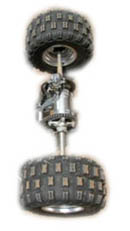

| SHA |
To get from A to B, you SHALL need a car. |
|

|
| くるま |
car
★★★★★ |
| 電車 | |
| 自転車 |
bicycle
★★★★★
|
| 救急車 |
ambulance
★★★☆☆
|
| 戦車 |
| Meaning | Hint | Radical | |
|---|---|---|---|
| 車 | car | ||
| 重 | heavy / overlap | EXTRA LINES / AXLES | |
| 垂 | drip, dangle | LINES DRIP OFF TO THE LEFT AND RIGHT | |
| 乗 | ride a vehicle | TREE | 木 |
Car is an axle turned sideways.
Heavy cars are so heavy they need an extra axle.
Paint drips or dangles from the side of the newly-painted car.
You ride a vehicle RIGHT INTO A TREE.
 KANJIDAMAGE
KANJIDAMAGE
 Number
1068
Number
1068